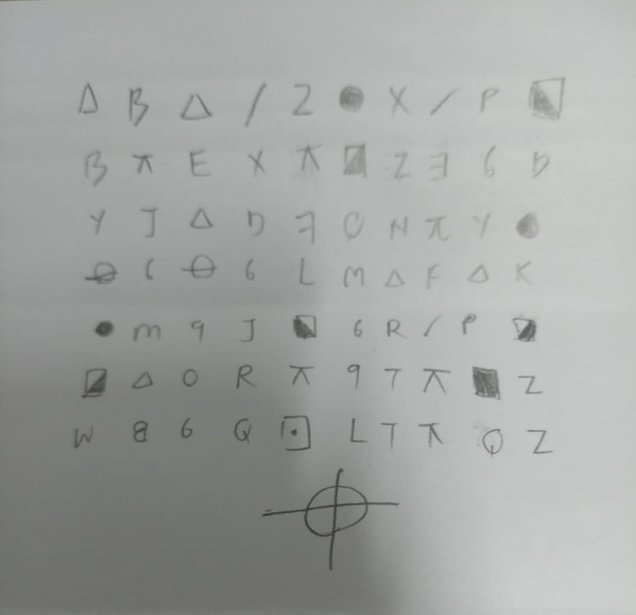
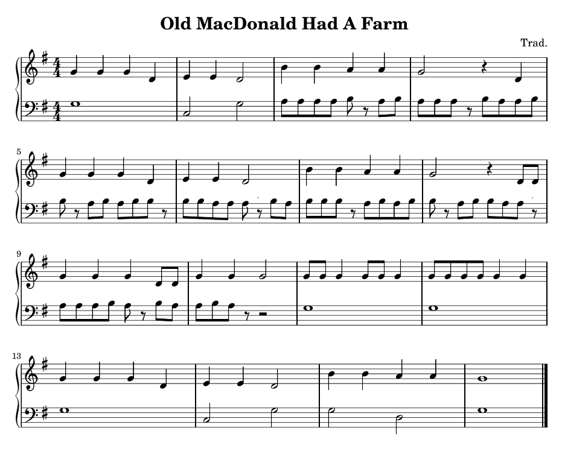
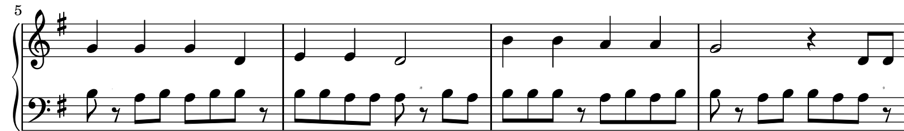
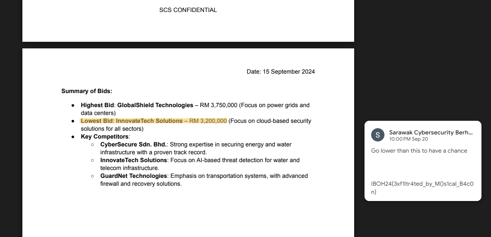

This event was hosted by the FSEC club and I had the opportunity to create and present 6 of my challenges to the players for this CTF. I have tried my best to make the challenges as interesting as possible but I think one unsurprising factor was that only 1 person solved 1 of my 6 challenges so I guess there just isn't much people interested in learning more about cryptography.
I was actually a bit unsatisfied with how I made my challenges after the event. As I put myself in the player's perspective, I don't think I would have enjoyed much from my own challenge simply because there isn't really the "interesting" factor implemented in it except just using known theories. Nevertheless, I am writing this writeup to hopefully encourage more people to try pivoting themselves more into the category of cryptography.
Grüß Gott!
This challenge was made by my friend which was an interesting C++ code of the enigma machine
Solution
Well first of all, Enigma is actually quite simple to reverse so I just threw it to ChatGPT to generate the reverse script for me. Now the important part is actually on this two line:
int n[6] = {1, 2, 3, 4, 5, 6 }; // just exampleand
if(code%2==0) code++;else code--; // Reflector: if even, add 1; if odd, subtract 1.Essentially, the encryption is based on the values of the rotors, which consist of 6 integers from 1 to 26. By going the brute-forcing way, it would mean about $26^6$ amount of tries needed, which can be a hassle. Looking closely at the code again, it can be realised that the rotors value are actually determined by odd and even integers, so technically we are just brute forcing $2^6$ which is way faster than before by a significant amount.
I'll Kill Yall
This is the Zodiac Killer Cipher based on the Z408 cryptogram. The tricky part about this is that the image given to us is actually cropped out in the hex and we have to edit the height in hex to view the full image.

Solution
Now we can just put this into the Zodiac Cipher decoder on dcode.fr to solve for this challenge.
Old MacData Had a Spy, E-I-E-I-O

Based on the sheet music, we can see that a certain part of the bass side has some suspicious notes. Starting from the 3rd bar to the 9th bar, the bass side weirdly became quavers and only plays A and B only. This should obviously indicates that it's the Baconian Cipher. Taking a closer look, we can even see these small little characters on top of the eigth rests.

Decoding the Baconian cipher and putting the characters in between the intended characters, we will get a shortened URL (bitly) which links us to the a drive file that has the flag in a comment.

The Plan
If we look closely at the key generation, we can see that this is the implementation of the Okamoto-Uchiyama cryptosystem, with a slight twist in the program. We are only allowed to encrypt any input once, decrypt any input once and view the encrypted log. Another added twist was that the assert function to check for log corruption was commented, meaning we can technically corrupt the encryption process by giving an input larger than $p$.
The initial thought for this challenge was that it's as simple as just viewing the encrypted log, and throw it into the decrypt function, wouldn't we just get our flag back like that? And as expected, it returned bunch of weird bytes back, this instantly indicates that the log must have been larger than $p$. There's also this session key value that is given to us as well which is basically the key for us to fix the log corruption issue.
$$ plaintext = (sessionkey - p - q)p + enc $$
This would mean that we need to somehow obtain the values of p and q in some other way, which can be exploited through the encrypt and decrypt functions.
Solution
The basic idea is that we will send an input $s$ to the encrypt function that is larger than $N^{1/2}$ to get the encrypted input $enc$, since the program won't assert it meaning it's perfectly fine to do so. Using the fact that it's going to be corrupted, meaning if we were to send $enc$ to be decrypted, it will return us something other than $s$, which we will name it $sp$. Now, the plaintext that we should have received from the decrypt function should have been equal to our initial input, but since it isn't, we can just gcd the difference and obtain the value $p$.
$$ sp \equiv s \mod p $$
$$ sp - s \equiv 0 \mod p $$
$$ gcd(sp - s, n) = p $$
$$ q = N/p^2 $$
Now we can calculate for the multiplier with session key and just manually decrypt the log with the $p$ value we obtained.
The actual decrypted log we will see is
The Detonation
Looking at the source code, we can see that this is an implementation of the Linear Congruential Generator (LCG) which will be used to generate the 20 pseudorandom numbers that we have to guess accurately to "defuse" the bomb. We are given the seed initially and also the first 3 sequence of numbers, which is more than enough for us to calculate the constants in the generator.
Solution
LCG follow the form of:
$$ a_{s+1} \equiv a_sm + c \mod n $$
for $s$ is the index of sequence meaning the value of $a$ for $s = 0$ is the seed.
$$ a_1 \equiv a_0m + c \mod n $$
$$ a_2 \equiv a_1m + c \mod n $$
$$ a_3 \equiv a_2m + c \mod n $$
We have the $a$ values for $s \in \set{ 0,1,2,3 } $, so this means we can obtain the $n$ like this:
$$ a_3 - a_2 \equiv (a_2 - a_1)m \mod n $$
$$ a_2 - a_1 \equiv (a_1 - a_0)m \mod n $$
$$ (a_3 - a_2)(a_1 - a_0)m \equiv (a_2 - a_1)^2 m \mod n $$
$$ (a_3 - a_2)(a_1 - a_0)(a_2 - a_1)^{-2} \equiv 0 \mod n $$
Now we can just reconnect to the server and fail the defuse again just to get another set of 4 values, then use gcd to get the value of $n$. After recovering $n$, calculating the values of $m$ and $c$ is just simple enough for us to do.
$$ a_2 - a_1 \equiv (a_1 - a_0)m \mod n $$
$$ (a_2 - a_1)(a_1 - a_0)^{-1} \equiv m \mod n $$
For $c$:
$$ a_1 \equiv a_0m + c \mod n $$
$$ a_1 - a_0m \equiv c \mod n $$
So now after we obtained all the constants, we can just reconnect to the server and calculate all 20 sequences of the random numbers generated by the LCG thus defusing the bomb.
The Escape
This is an implementation of the Schnorr Digital Signature Scheme and it seems that the nonce used for generating the signatures are close enough meaning we can use LLL to properly reduce our matrix to get the basis that's close enough to the vector which we want.
Solution
The signature $(r,s)$ is generated by:
$$ s \equiv k - xe \mod n-1 $$
$$ r \equiv g^x \mod n$$
where $g \in \set{2,...,n-1}$, $e = H(message \parallel r)$, $x$ is our private key and $k$ is the nonce.
A total of 4 signatures are signed where each two of the signatures have close nonces. We can rearrange the equations to a basis for then LLL can be used to reduce the matrix and solve the combinatorial problem. We need to find the private key value $x$ to be able to decrypt the AES CBC. For the IV if you simplify the equation $(k_1k_3)-(k_2k_1)+(k_2k_0)-(k_0k_3)$ properly it's actually just $(k_1-k_0)(k_3-k_2)$.
$$ s_0 \equiv k_0 - xe_0 \mod n-1 $$
$$ s_1 \equiv k_1 - xe_1 \mod n-1 $$
We can use the fact that k1 and k0 shares the same 10 bytes in LSB, meaning we can just substract them to be left with only the 8 bytes of MSB. And this also works in our favour since we need their substracted value for calculating our IV. Let's assume that $k_1-k_0 = k_{10}$, now we can reqrite the equations as
$$ s_1 - s_0 \equiv k_{10} -x(e_1 - e_0) \mod n-1 $$
$$ (s_1 - s_0) + x(e_1 - e_0) - k_{10} + d(n-1) = 0 $$
Now we can apply this to $s_3$ and $s_2$ as well and start forming the lattice for LLL. Basically we are just going to assume that there will be a vector $[A, B, C, D, E, F]$ which exist in the lattice below.
$$ \begin{bmatrix} 1 & 0 & 0 & 0 & s_1 - s_0 & s_3 - s_2 \\ 0 & 1 & 0 & 0 & e_1 - e_0 & e_3 - e_2 \\ 0 & 0 & 1 & 0 & 2^{80} & 0 \\ 0 & 0 & 0 & 1 & 0 & 2^{80} \\ 0 & 0 & 0 & 0 & n-1 & 0 \\ 0 & 0 & 0 & 0 & 0 & n-1 \\ \end{bmatrix} $$
where $A = 1$, $B = x$, $C = k_{10}$, $D = k_{32}$, $E = 0$, $F = 0$
In a way we can essentially think that LLL is just a way to solve a system of equations by reduction as shown below
$$ A\begin{bmatrix} 1 \cr 0 \cr 0 \cr 0 \cr s_1 - s_0 \cr s_3 - s_2 \end{bmatrix} + B\begin{bmatrix} 0 \cr 1 \cr 0 \cr 0 \cr e_1 - e_0 \cr e_3 - e_2 \end{bmatrix} + C\begin{bmatrix} 0 \cr 0 \cr 1 \cr 0 \cr 2^{80} \cr 0 \end{bmatrix} + D\begin{bmatrix} 0 \cr 0 \cr 0 \cr 1 \cr 0 \cr 2^{80} \end{bmatrix} + E\begin{bmatrix} 0 \cr 0 \cr 0 \cr 0 \cr n-1 \cr 0 \end{bmatrix} + F\begin{bmatrix} 0 \cr 0 \cr 0 \cr 0 \cr 0 \cr n-1 \end{bmatrix} = 0 $$
And since we know approximately the size of our target values, this just seems like a CVP (Closest Vector Problem) and we can utilize Babai's Nearest Plane Algorithm to find the nearest vector to our target values. We can just set our target vector be $[1,\frac{n-1}{2},-2^{64}, -2^{64}, 0, 0]$ and run Babai's algorithm.
Problem is that we will most likely not get the vector we want since the size we are searching for is too big, so it's much advisable that we add weight to our LLL instead to make it so that our target vector is smaller. We can scale each column of the lattice with the inverse of each value in the target vector which effectively normalises the lattice.
$$ \begin{bmatrix} 1 & 0 & 0 & 0 & s_1 - s_0 & s_3 - s_2 \\ 0 & \frac{2}{p-1} & 0 & 0 & e_1 - e_0 & e_3 - e_2 \\ 0 & 0 & \frac{1}{2^{64}} & 0 & 2^{80} & 0 \\ 0 & 0 & 0 & \frac{1}{2^{64}} & 0 & 2^{80} \\ 0 & 0 & 0 & 0 & n-1 & 0 \\ 0 & 0 & 0 & 0 & 0 & n-1 \\ \end{bmatrix} $$
Now our target vector has been shortened to $[1,1,-1,-1,0,0]$ since we moved the weight to the lattice. This will now return us our target vector and we can just obtain all the values we needed as mentioned before:
$$ x = B \cdot \frac{p-1}{2} $$
$$ k_{10} = C \cdot -2^{64} \cdot 2^{80} $$
$$ k_{32} = D \cdot -2^{64} \cdot 2^{80} $$
And now we can decrypt the AES-CBC with the obtained key and IV to get our well deserved flag.